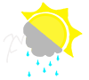

Website Planning Document
Federico R. Martinez
Home
Target Audience
Color Scheme
Typography
Site Name: The Weather Maniac
Site Purpose: Provide weather information to plan trips efficiently and be informed.
Domain Name: theweathermaniac.com (available through HostGator.com
Site Logo
